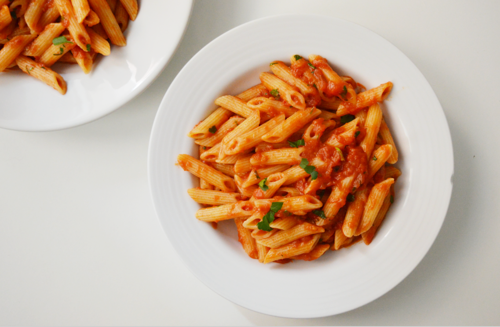

Penne Arrabiata

Description
Penne Arrabiata is a spicy Italian pasta dish made with penne, tomatoes, garlic, olive oil, and red chili peppers.
The name "arrabiata" means "angry" in Italian, referring to the dish's fiery heat
Here's a quick recipe:
Ingredients
- 200g penne pasta
- 2 tablespoon olive oil
- 2 cloves garlic, minced
- 1-2 red chili pepper, chopped
- 400g canned diced tomatoes
- Salt to taste
- Fresh basil or parsley
Steps
- Cook the penne pasta according to the package instructions until al dente.
Drain and set aside.
- In a large skillet, heat olive oil over medium heat.
Add garlic and chili pappers and saute for 1-2 min, until fragnant.
- Add canned tomatoes and pinch of salt.
Simmer for 10-15 minutes until the sauce thickens slightly.
- Toss the cooked penne in the sauce and mix well.
- Serve hot, garnished with fresh basil or parsley if desired.
Enjoy your delicious and easy Penne Arrabiata!